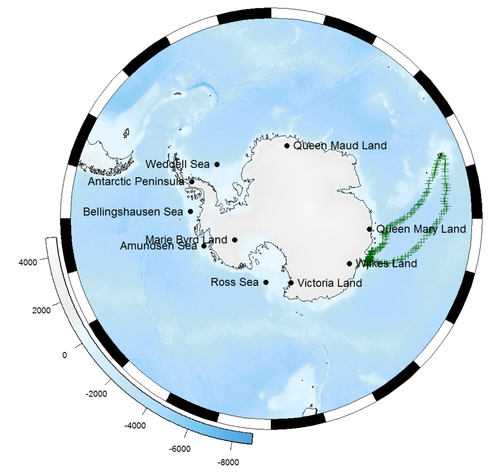
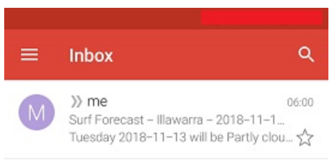
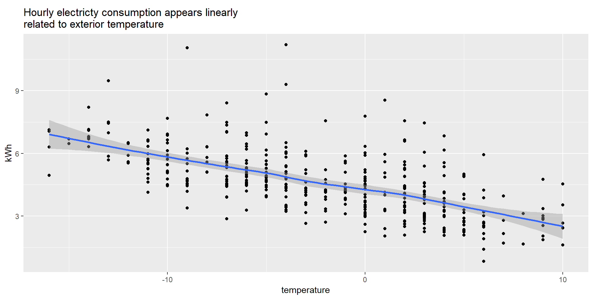

Nov 27, 2018
rOpenSci HQ
- We just had a community call on Working with images in R. Check out the notes and video at https://github.com/ropensci/commcalls#past-calls
- We need a new maintainer for the chromer package! It is a package for interacting with the chromosome counts database (CCDB) http://ccdb.tau.ac.il. It is in working order, though there are a number of issues outstanding to address, and other possible issues once you dive in. The package has had two citations (that we know of) so far: Sessa & Der 2017 and Zenil-Ferguson et al. 2017.
Software 📦
CRAN:  GitHub:
GitHub: 
New packages
- The first version (
v1.0.0) ofrestezis on CRAN - create and query a local copy of GenBank. Checkout the docs to get started. You can find the software review at ropensci/onboarding#232

- The first version (
v1.0.0) ofrcitesis on CRAN - access the CITES Speciesplus database. See the release notes for changes. Checkout the docs to get started. You can find the software review at ropensci/onboarding#244
New versions
- Two new versions (
v0.2.0/v0.2.1) ofrdflibare on CRAN - High level wrapper around the redland rdf package. See the release notes for changes. Checkout the docs to get started.
rdf()now supports all major storage backends; new fxnlength() - A new version (
v0.3.5) ofjstoris on CRAN - read data from JSTOR/DfR. See the release notes for changes. Checkout the docs to get started.
readrcompatibility fix; column names injst_get_refernceshave been renamed to avoid ambiguity when matching with output fromjst_get_article - A new version (
v1.3.0) ofGSODRis on CRAN - Global Surface Summary of the Day (GSOD) Weather Data from R. See the release notes for changes. Checkout the docs to get started.
use
future_applyin processing files after downloading - A new version (
v0.2.1) oftileris on CRAN - Generate geographic and non-geographic map tiles from R. See the release notes for changes. Checkout the docs to get started.
improved help for Windows users; added
leafletexamples; bug fix for Windows users - A new version (
v0.4) ofNLMRis on CRAN - Simulating neutral landscape models. See the release notes for changes. Checkout the docs to get started.
nlm_neigh,nlm_mpd,nlm_randomrectangularclusternow implemented in Rcpp - A new version (
v0.9.0) ofspoccis on CRAN - an interface to many species occurrence data sources. See the release notes for changes. Checkout the docs to get started.
AntWeb data source removed; fixes to eBird internals;
occ()now collects HTTP request error info & gainsthrow_warningsparam to control warnings - A new version (
v1.19.1) ofrtikais on CRAN - R Interface to Apache Tika. See the release notes for changes. Checkout the docs to get started.
updated Tika version
- A new version (
v0.2.0) offingertipsRis on CRAN - Fingertips data for public health http://fingertips.phe.org.uk/. See the release notes for changes. Checkout the vignettes to get started.
fix for
select_indicators(); speed ups forindicators()fxn
Software Review ✔
We accept community contributed packages via our onboarding system - an open software review system, sorta like scholarly paper review, but way better. We’ll highlight newly onboarded packages here. A huge thanks to our reviewers, who do a lot of work reviewing (see the blog post on our review system), and the authors of the packages!
If you want to be a reviewer fill out this short form, and we’ll ping you when there’s a submission that fits in your area of expertise.
The following packages recently went through our onboarding process and have been approved!
- tiler > Create Geographic and Non-Geographic Map Tiles
- Author: Matthew Leonawicz
- Issue: ropensci/onboarding#226
- Reviewers:
- spatsoc > Group Animal Relocation Data by Spatial and Temporal Relationship
- Author: Alec Robitaille
- Issue: ropensci/onboarding#237
- Reviewers:
- restez > Create and Query a Local Copy of GenBank in R
- Author: Dom Bennett
- Issue: ropensci/onboarding#232
- Reviewers:
- treeStartR > Generate Starting Trees For Combined Molecular, Morphological and Stratigraphic Data
- Author: April Wright
- Issue: ropensci/onboarding#239
- Reviewers:
- rcites > R Interface to the Species+ Database
- Author: Jonas Geschke
- Issue: ropensci/onboarding#244
- Reviewers:
The following package was recently submitted:
- git2rdata > Store and Retrieve Data.frames in a Git Repository
- Author: Thierry Onkelinx
- Issue: ropensci/onboarding#263
- Reviewers: not assigned yet
On the blog
Ben Raymond and Michael Sumner wrote about The Antarctic/Southern Ocean rOpenSci community. Do check it out to see what’s going on in this flourishing community within rOpenSci of folks interested in Antarctic/Southern Ocean data and software.

Peter Desmet, Damiano Oldoni, and Lien Reyserhove wrote about Checklist Recipe - How we created a template to standardize species data. Their work won the recent GBIF Ebbe Nielsen Challenge. It’s a great example of leveraging R to create reproducible workflows!

Use cases
The following 16 works use/cite rOpenSci software:
- Tickler et al. use seaaroundus in their paper Modern slavery and the race to fish 1
- Lynd et al. use plotly in their paper Insecticide resistance in Anopheles gambiae from the northern Democratic Republic of Congo, with extreme knockdown resistance (kdr) mutation frequencies revealed by a new diagnostic assay 2
- Robitaille et al. use spatsoc in their paper Conducting social network analysis with animal telemetry data: applications and methods using spatsoc 3
- Moura et al. use MODIStsp in their paper Relation of El Niño and La Niña phenomena to precipitation, evapotranspiration and temperature in the Amazon basin 4
- Bartomeus et al. use taxize and rgbif in their paper Historical collections as a tool for assessing the global pollination crisis 5
- Jarić et al. use rfishbase in their paper Susceptibility of European freshwater fish to climate change: species profiling based on life-history and environmental characteristics 6
- Weishäupl et al. use magick in their paper Physiological and pathophysiological characteristics of ataxin-3 isoforms 7
- Perez et al. use spocc in their paper Botanic gardens are an untapped resource for studying the functional ecology of tropical plants 8
- Albrecht et al. use cld2 in their paper Description of Cardiological Apps From the German App Store: Semiautomated Retrospective App Store Analysis 9
- Patel used tokenizers in their paper Sentiment Analysis of Harry Potter Book Series using R 10
- Varela used MODIStsp in their dissertation Applications of remote sensing in agriculture via unmanned aerial systems and satellites 11
- Garmendia et al. used writexl in their paper Insect repellent and chemical agronomic treatments to reduce seed number in “Afourer” mandarin. Effect on yield and fruit diameter 12
- Watts & Miksis-Olds used rentrez in their white paper The Ocean as a Living Sensor: Environmental DNA and Acoustics for Detecting Marine Life 13
- Hurtado et al. used MODIStsp in their paper Population Dynamics of Anopheles albimanus (Diptera: Culicidae) at Ipetí-Guna, a Village in a Region Targeted for Malaria Elimination in Panamá 14
- Pietrosemoli & Dobay used rentrez in their book chapter Optimized Protein–Protein Interaction Network Usage with Context Filtering 15
- Boettiger wrote about his new package piggyback in a JOSS paper Managing Larger Data on a GitHub Repository 16
In the news
Dean Marchiori used our package bomrang (from maintainer Adam Sparks) to create an automated surf conditions email Surf Check - Automating Weather Forecast Emails in R
My latest post uses the bomrang #rstats 📦 to create an automated email each morning w my local surf conditions 🤙🌊 @rOpenSci @adamhsparks https://t.co/fqMYLgyYsi
— Dean Marchiori (@deanmarchiori) November 13, 2018

Simon Coulombe used our package weathercan (from maintainer Steffi LaZerte) in his blog post about Buying a heat pump the data scientist way
Does buying a heat pump for my 🏠 in cold 🇨🇦 makes sense, the data scientist way. I use local weather data provided by the weathercan package, my hourly electricity consumption and some tech sheets. (thanks @steffilazerte !) @rOpenSci @Rbloggers #rstats https://t.co/kP5K5XZotm pic.twitter.com/qOEEwAQzja
— Simon Coulombe (@CoulSim) November 22, 2018

Keep up with rOpenSci
- Mailing list: Sign up with an email address to get this newsletter sent to your inbox -> ropensci.org/#subscribe
- Alternatively, you can subscribe to this newsletter via our XML feed at https://news.ropensci.org/feed.xml or our JSON feed at https://news.ropensci.org/feed.json
- rOpenSci on Twitter: @ropensci
- The rOpenSci blog at ropensci.org/blog - you can subscribe in any RSS aggregator, or manually via https://ropensci.org/feed.xml. We also announce new blog posts on our Twitter account.
Footnotes
-
Tickler, D., Meeuwig, J. J., Bryant, K., David, F., Forrest, J. A. H., Gordon, E., … Zeller, D. (2018). Modern slavery and the race to fish. Nature Communications, 9(1). https://doi.org/10.1038/s41467-018-07118-9 ↩
-
Lynd, A., Oruni, A., van’t Hof, A. E., Morgan, J. C., Naego, L. B., Pipini, D., … Weetman, D. (2018). Insecticide resistance in Anopheles gambiae from the northern Democratic Republic of Congo, with extreme knockdown resistance (kdr) mutation frequencies revealed by a new diagnostic assay. Malaria Journal, 17(1). https://doi.org/10.1186/s12936-018-2561-5 ↩
-
Robitaille, A. L., Webber, Q. M. R., & Vander Wal, E. (2018). Conducting social network analysis with animal telemetry data: applications and methods using spatsoc. https://doi.org/10.1101/447284 ↩
-
Moura, M. M., dos Santos, A. R., Pezzopane, J. E. M., Alexandre, R. S., da Silva, S. F., Pimentel, S. M., … de Carvalho, J. R. (2019). Relation of El Niño and La Niña phenomena to precipitation, evapotranspiration and temperature in the Amazon basin. Science of The Total Environment, 651, 1639–1651. https://doi.org/10.1016/j.scitotenv.2018.09.242 ↩
-
Bartomeus, I., Stavert, J. R., Ward, D., & Aguado, O. (2018). Historical collections as a tool for assessing the global pollination crisis. Philosophical Transactions of the Royal Society B: Biological Sciences, 374(1763), 20170389. https://doi.org/10.1098/rstb.2017.0389 ↩
-
Jarić, I., Lennox, R. J., Kalinkat, G., Cvijanović, G., & Radinger, J. (2018). Susceptibility of European freshwater fish to climate change: species profiling based on life-history and environmental characteristics. Global Change Biology. https://doi.org/10.1111/gcb.14518 ↩
-
Weishäupl, D., Schneider, J., Peixoto Pinheiro, B., Ruess, C., Dold, S. M., von Zweydorf, F., … Schmidt, T. (2018). Physiological and pathophysiological characteristics of ataxin-3 isoforms. Journal of Biological Chemistry, jbc.RA118.005801. https://doi.org/10.1074/jbc.ra118.005801 ↩
-
Perez, T. M., Valverde-Barrantes, O., Bravo, C., Taylor, T. C., Fadrique, B., Hogan, J. A., … Feeley, K. J. (2018). Botanic gardens are an untapped resource for studying the functional ecology of tropical plants. Philosophical Transactions of the Royal Society B: Biological Sciences, 374(1763), 20170390. https://doi.org/10.1098/rstb.2017.0390 ↩
-
Albrecht, U.-V., Hasenfuß, G., & von Jan, U. (2018). Description of Cardiological Apps From the German App Store: Semiautomated Retrospective App Store Analysis. JMIR mHealth and uHealth, 6(11), e11753. https://doi.org/10.2196/11753 ↩
-
Patel, D. 2018. Sentiment Analysis of Harry Potter Book Series using R. http://www.j-asc.com/gallery/66-november-1233.pdf ↩
-
Varela, S. (2018). Applications of remote sensing in agriculture via unmanned aerial systems and satellites (Doctoral dissertation). http://krex.k-state.edu/dspace/bitstream/handle/2097/39333/SebastianVarela2018.pdf ↩
-
Garmendia, A., Beltrán, R., Zornoza, C., Breijo, F., Reig, J., Bayona, I., & Merle, H. (2019). Insect repellent and chemical agronomic treatments to reduce seed number in “Afourer” mandarin. Effect on yield and fruit diameter. Scientia Horticulturae, 246, 437–447. https://doi.org/10.1016/j.scienta.2018.11.025 ↩
-
Watts, A. W., & Miksis-Olds, J. 2018. The Ocean as a Living Sensor: Environmental DNA and Acoustics for Detecting Marine Life. https://phe.rockefeller.edu/eDNAmarine2018/papers/Watts-Miksis-Olds_paper_Ocean_as_a_Living_Sensor.pdf ↩
-
Hurtado, L., Rigg, C., Calzada, J., Dutary, S., Bernal, D., Koo, S., & Chaves, L. (2018). Population Dynamics of Anopheles albimanus (Diptera: Culicidae) at Ipetí-Guna, a Village in a Region Targeted for Malaria Elimination in Panamá. Insects, 9(4), 164. https://doi.org/10.3390/insects9040164 ↩
-
Pietrosemoli, N., & Dobay, M. P. (2018). Optimized Protein–Protein Interaction Network Usage with Context Filtering. In Computational Cell Biology (pp. 33-50). Humana Press, New York, NY. https://link.springer.com/protocol/10.1007/978-1-4939-8618-7_2 ↩
-
Boettiger, C. (2018). Managing Larger Data on a GitHub Repository. Journal of Open Source Software, 3(29), 971. https://doi.org/10.21105/joss.00971 ↩